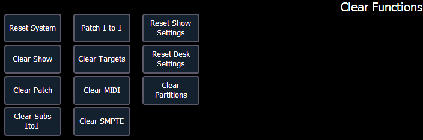

You can clear the patch entirely by accessing the clear functions from Browser> Clear. The clear functions window will open in the CIA.

To clear the patch, click {Clear Patch}. A confirmation is required before the patch will be cleared.
To create a 1-to-1 patch, click {Patch 1 to 1}. This will remove the current patch.
To exit the clear functions screen without clearing, press the [Displays] key at any time or select a clear button and then select {Cancel} from the confirmation screen.